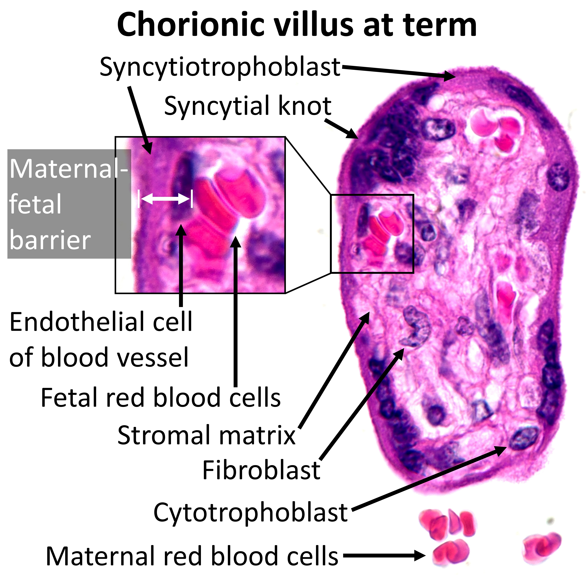

Separate blood compartments; gas-specific net drive
The unchanged human term-villus section identifies maternal and fetal compartments. The adjacent exercise uses chosen partial pressures to illustrate the sign of a passive gas gradient, without tracing a molecule through the photographed tissue.

Held synthetic partial pressures
No value is measured from this specimen. The 0–100 mmHg range is an exercise input domain, not a clinical reference interval.
Pressure: common 0–100 mmHg axis
Dimensionless integrated signed drive
J* = (50 − 25) mmHg / (100 mmHg) = +0.250
Net drive toward fetus
Q* = J* × phase = +0.000
Phase 0.00 / 1.00
One presentation interval lasts eight seconds. Q* integrates the signed drive over this dimensionless presentation phase; it is not a gas amount, physical flux or biological transit time. Pressures are held, not depleted. Changing an input pauses and resets phase.
Ordered exercise states
| Chosen example | Maternal / fetal mmHg | J* | Q* at phase 0 / 0.5 / 1 | Net drive |
|---|---|---|---|---|
| O₂ | 50 / 25 | +0.25 | 0 / +0.125 / +0.25 | Toward fetus |
| CO₂ | 40 / 45 | −0.05 | 0 / −0.025 / −0.05 | Toward mother |
| Either: equal | 40 / 40 | 0 | 0 / 0 / 0 | Zero net; molecular motion persists |
| O₂: reversed | 25 / 50 | −0.25 | 0 / −0.125 / −0.25 | Toward mother |
| CO₂: reversed | 50 / 25 | +0.25 | 0 / +0.125 / +0.25 | Toward fetus |
Partial pressure is not total blood gas content. Only dissolved molecular gas is represented in this diffusion principle; Hb and whole RBCs do not cross the model barrier. CO₂ carriage includes bicarbonate chemistry in blood, but this graph does not send bicarbonate particles along a molecular CO₂ route. Nutrient-specific transport, metabolism, flow geometry and conductances are not modeled. No relative O₂/CO₂ transfer rate is assigned.
Scientific context: Pearce et al. (2016), dissolved versus Hb-bound oxygen; Van Willigen et al. (2024), placental gas-gradient principle; human placental bicarbonate perfusion study. This independently drawn generic quantitative exercise copies no source-paper artwork or model implementation. Source/state record · Reproduction record.